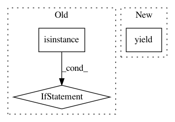

e363904af067de1beac98313c0a6f8362980d406,distributed/tests/test_scheduler.py,,test_service_hosts,#,1138
Before Change
yield s.start(url)
sock = first(s.services["bokeh"].server._http._sockets.values())
if isinstance(port, tuple): // host explicitly overridden
assert sock.getsockname()[0] == port[0]
elif isinstance(expected, tuple):
assert sock.getsockname()[0] in expected
else:
assert sock.getsockname()[0] == expected
yield s.close()
@gen_cluster(client=True, worker_kwargs={"profile_cycle_interval": 100})
After Change
sock = first(s.services["bokeh"].server._http._sockets.values())
assert sock.getsockname()[0] == "127.0.0.1"
yield s.close()
@gen_cluster(client=True, worker_kwargs={"profile_cycle_interval": 100})
def test_profile_metadata(c, s, a, b):
In pattern: SUPERPATTERN
Frequency: 3
Non-data size: 3
Instances
Project Name: dask/distributed
Commit Name: e363904af067de1beac98313c0a6f8362980d406
Time: 2019-04-09
Author: mrocklin@gmail.com
File Name: distributed/tests/test_scheduler.py
Class Name:
Method Name: test_service_hosts
Project Name: chainer/chainer
Commit Name: 162a4be63ab31e7c446eff3c87f43b48840c90c7
Time: 2019-09-25
Author: kataoka@preferred.jp
File Name: chainer/testing/parameterized.py
Class Name:
Method Name: _parameterize_test_case_generator
Project Name: OpenNMT/OpenNMT-py
Commit Name: ab89e458bdec863f2dc2f7232ffd38d49758b31a
Time: 2018-06-08
Author: srush@seas.harvard.edu
File Name: onmt/Loss.py
Class Name:
Method Name: filter_shard_state